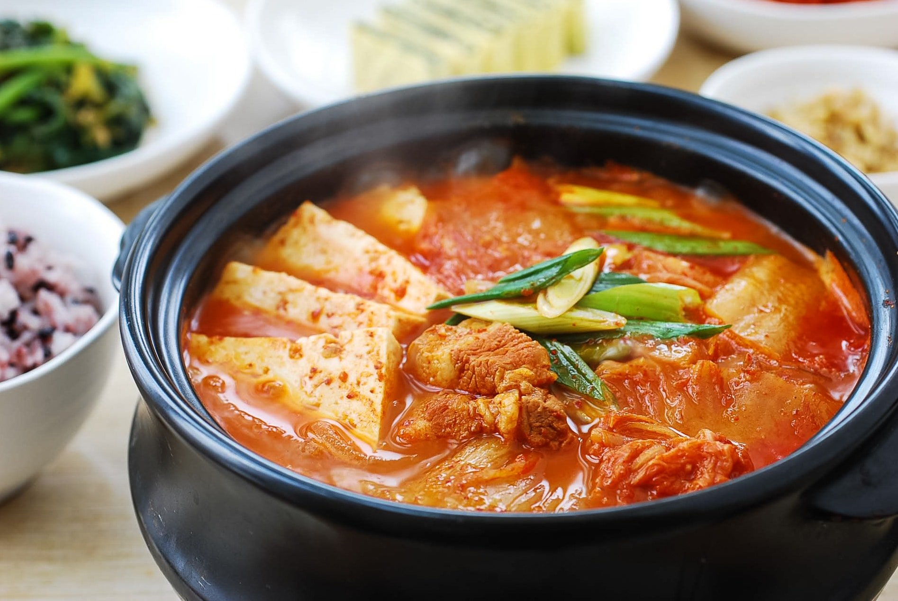

Kimchi Jjigae

Kimchi Jjigae is a classic Korean stew. Made from fermented kimchi, protein, tofu, and vegetables, this robust stew is spicy, sour, salty, savory, and sweet. This comforting dish is sure to soothe one's soul.
Ingredients
- 2 cups of fully fermented kimchi
- 4 oz of pork(or your protein of choice)
- 1-3 tsp of gochugaru(Korean red chili pepper flakes)
- 1 tsp minced garlic
- 1 tbs cooking oil
- 1/2 cup juice from kimchi(if available)
- 6 oz tofu
- 2 scallions
- salt(or soy sauce) and pepper to taste
Instructions
- Cut the kimchi into bite size pieces.
- Cut the meat into bite sizes. Slice the tofu (about 1/2-inch thick), and roughly chop the scallions.
- Heat a small to medium pot with 1 tablespoon of oil. Add the kimchi, pork, red pepper flakes and garlic and cook over medium high heat until the kimchi is softened and the pork cooks through, about 5 to 7 minutes.
- Add the kimchi juice and about 2 to 2.5 cups of water (or broth). Bring it to a boil, and continue cooking for 5 minutes. Then, reduce the heat to medium, and boil, covered, for about 15 minutes. You can add more water if necessary.
- Drop the tofu and scallions in. Salt (or soup or regular soy sauce) and pepper to taste. (Salt is usually not necessary, unless kimchi was lightly seasoned or kimchi juice is not available.) Boil until the tofu is cooked through, about 5 minutes. Serve while bubbling over from the heat.
Credits
Recipe adapted from Korean Bapsang.